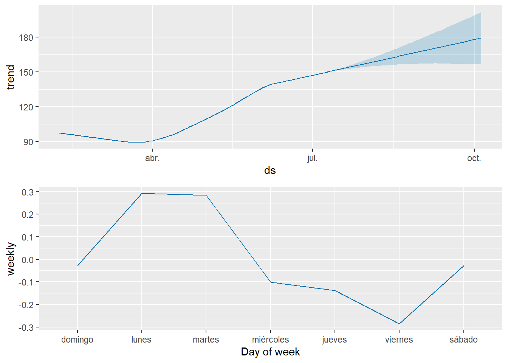
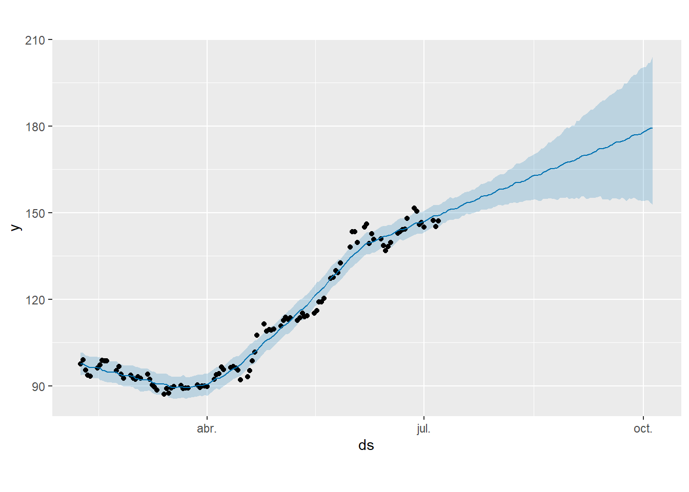
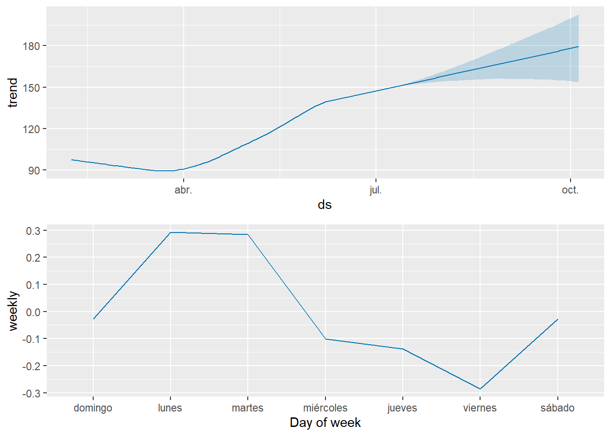

Sección 20 Serie de tiempo con Prophet
20.1 Objetivo
Realizar un pronóstico con base en una serie de tiempo de datos, utilizando el paquete “Prophet”, desarrollado por Facebook
20.2 Cargar datos
- Vamos a utilizar los mismos datos como en el ejercicio anterior sobre series de tiempo. Es decir:
- Decargar datos de la acción de Google (ticker GOOG) desde la web (yahoo finance), utilizando el paquete quantmod de R y asignar el resultado a una variable “data”
- Esto para el periodo de 2005-02-07 hasta 2005-07-08
- Mostrar los útlimos 6 registros de estos datos (de la variable data)
- Mostrar la clase de la variable “data”
if(!require('quantmod')) install.packages('quantmod'); library(quantmod)
stockEnv <- new.env()
tickers <- c('GOOG')
startDate <- '2005-02-07'
endDate <- '2005-07-08'
getSymbols(Symbols = tickers,
env = stockEnv,
src = 'yahoo',
from = startDate,
to = endDate)## [1] "GOOG"data <- stockEnv$GOOG
tail(data)## GOOG.Open GOOG.High GOOG.Low GOOG.Close GOOG.Volume GOOG.Adjusted
## 2005-06-29 150.6852 151.6217 145.5295 145.8135 36734576 145.8135
## 2005-06-30 146.6204 148.9069 144.9766 146.5258 30301955 146.5258
## 2005-07-01 146.9691 147.5669 144.0700 145.0812 18524375 145.0812
## 2005-07-05 145.5046 147.4374 144.5731 147.3029 15044179 147.3029
## 2005-07-06 148.0949 148.2443 145.1459 145.2157 16060574 145.2157
## 2005-07-07 144.1547 147.3477 143.7163 147.2182 21424203 147.2182class(data) # [1] "xts" "zoo"## [1] "xts" "zoo"20.3 Convertir a data frame
- Ahora, convertir la variable “data” de xts , zoo a un data frame en R, utilizando la función data.frame() y asignar el resultado a una variable “df”
- Este data frame debe tener una columna “index” con las fechas de la serie de tiempo y en las demás columnas los precios (formato OHLC)
- Nota: Todos estos precios se pueden asignar mediante el paámetro “coredata” de data.frame()
- Mostrar la estructura de df (str())
- Mostrar las primeras 6 filas con las fechas de df
# convertir fechas en una columna, mediante el cast a un data.frame
# y escribir los datos a un archivo csv
# write.csv(data.frame(df), 'google.csv')
# luego se pueden leer los datos con read.csv, lo que incluye la columna con las fechas
# o se puede convertir el objetivo xts a un dataframe
df <- data.frame(date=index(data), coredata(data))
str(df)## 'data.frame': 105 obs. of 7 variables:
## $ date : Date, format: "2005-02-07" "2005-02-08" ...
## $ GOOG.Open : num 102.2 98.1 100 95.6 93 ...
## $ GOOG.High : num 102.8 99.6 100.4 95.7 95.8 ...
## $ GOOG.Low : num 97.4 96.9 94.4 92.3 92.7 ...
## $ GOOG.Close : num 97.6 98.9 95.4 93.6 93.4 ...
## $ GOOG.Volume : num 26017958 23046060 34471726 38107704 26330324 ...
## $ GOOG.Adjusted: num 97.6 98.9 95.4 93.6 93.4 ...head(df[,1])## [1] "2005-02-07" "2005-02-08" "2005-02-09" "2005-02-10" "2005-02-11"
## [6] "2005-02-14"- Asignar a una variable “df2” únicamenete los valores de la primera columna (con la fechas) y de la séptima columna (GOOG.Adjusted) de df
- Mostrar la estructura de df2 (str())
# subsetting solo columna de la fecha (col 1) y el cierre ajustado (col 7)
df2 <- df[ , c(1,7)]
str(df2)## 'data.frame': 105 obs. of 2 variables:
## $ date : Date, format: "2005-02-07" "2005-02-08" ...
## $ GOOG.Adjusted: num 97.6 98.9 95.4 93.6 93.4 ...20.4 Realizar el pronóstico con prophet
- Realizar el pronóstico, utilizando el paquete “prophet”
- Esto require primero cambiar el nombre de las columnas del data frame df2. Fechas = ds y “GOOG.Adjusted” = y
- Mostrar la estructura de df2
- Donde:
- y(t) = g(t) + s(t) + h(t) + epsilon
- g(t): modela el crecimiento periódico. Prophet deteca automaticamente cambios en la tendencia y señala puntos de cambio
- s(t): estacionaridad. Prophet usa una serie Fourier y el componente estacional semanal
- h(t): el compenente de vacacciones
- epsilon: el término de error, que utiliza prophet
# pronóstico con facebook prophet
if(!require('prophet')) install.packages('prophet'); library(prophet)## Loading required package: prophet## Loading required package: rlang##
## Attaching package: 'rlang'## The following object is masked from 'package:igraph':
##
## is_named## The following objects are masked from 'package:purrr':
##
## %@%, as_function, flatten, flatten_chr, flatten_dbl, flatten_int,
## flatten_lgl, flatten_raw, invoke, list_along, modify, prepend,
## splice# y(t) = g(t) + s(t) + h(t) + epsilon
# g(t): modela el crecimiento periódico. Prophet deteca automaticamente
# cambios en la tendencia y señala puntos de cambio
# s(t): estacionaridad. Prophet usa una serie Fourier y el componente estacional semanal
# h(t): el compenente de vacacciones
# epsilon: el término de error, que utiliza prophet
colnames(df2) <- c('ds', 'y')
str(df2)## 'data.frame': 105 obs. of 2 variables:
## $ ds: Date, format: "2005-02-07" "2005-02-08" ...
## $ y : num 97.6 98.9 95.4 93.6 93.4 ...20.4.1 Crear el modelo
- Crear el modelo de pronóstico, utilizando la función prophet() con df2 y asignar el resultado a una variable “model”
#crear el modelo de pronóstico, utilizando prophet
model <- prophet(df2)## Disabling yearly seasonality. Run prophet with yearly.seasonality=TRUE to override this.## Disabling daily seasonality. Run prophet with daily.seasonality=TRUE to override this.- Con make_future_dataframe() debemos generar un dataframe con las fechas de los futuros periodos y asignar el resultado a una variable “future”
- Aquí en el ejemplo aplicamos el model y el parámetro: periods=3*30 al respecto
- Luego, mostrar las últimas 6 filas (registros) de “future”
# con make_future_dataframe() podemos generar un dataframe con las fechas de
# los futuros periodos
future <- make_future_dataframe(model,periods=3*30)
tail(future)## ds
## 190 2005-09-30
## 191 2005-10-01
## 192 2005-10-02
## 193 2005-10-03
## 194 2005-10-04
## 195 2005-10-0520.4.2 Pronosticar - predict
- Luego, aplicar la función predict() para predicir los valores (precios) futuros y asignar el resultado a una variable “forecast.” Esta función recibe como parámetros: model y future
- Mostrar las últimas 6 filas de “forecast,” pero únicamente los valores de las siguientes columnas: ‘ds,’‘yhat,’ ‘yhat_lower,’ ‘yhat_upper’
# aplicar el método predict() para predicir los valores (precios) futuros
forecast <- predict(model, future)
# tail(forecast)
tail(forecast[c('ds','yhat', 'yhat_lower', 'yhat_upper')])## ds yhat yhat_lower yhat_upper
## 190 2005-09-30 177.3840 156.3210 197.7868
## 191 2005-10-01 177.9774 156.8485 199.3778
## 192 2005-10-02 178.3117 157.0199 199.7805
## 193 2005-10-03 178.9650 157.3314 201.0657
## 194 2005-10-04 179.2917 155.9497 202.2743
## 195 2005-10-05 179.2408 156.7446 202.3476- Graficar con la función plot() con base en: model y forecast
#graficar
plot(model, forecast)- Utilizando la función prophet_plot_components() con model y forecast para mostrar los componentes de la serie de tiempo, como la tendencia de los precios
# componentes en términos de la tendencia y de la estacionalidad semanal
prophet_plot_components(model, forecast)
- Presentar una gráfica más interactiva, utilizando la función dyplot.prophet()
# gráfica más interactiva
dyplot.prophet(model, forecast)## Warning: `select_()` was deprecated in dplyr 0.7.0.
## Please use `select()` instead.- Intentar mejorar el modelo construido
- Aplciar: prophet(daily.seasonality = FALSE, yearly.seasonality = FALSE) y asignar el resultado a una variable model2
- Agregar: add_seasonality(model2, name=‘self_defined_cycle,’ period=8, fourier.order = 8,mode=‘additive’)
- Finalmente, asignar fit.prophet(model2, df2) a model2
# mejorar el modelo
model2 <- prophet(daily.seasonality = FALSE, yearly.seasonality = FALSE)
add_seasonality(model2, name='self_defined_cycle', period=8, fourier.order = 8,mode='additive')## $growth
## [1] "linear"
##
## $changepoints
## NULL
##
## $n.changepoints
## [1] 25
##
## $changepoint.range
## [1] 0.8
##
## $yearly.seasonality
## [1] FALSE
##
## $weekly.seasonality
## [1] "auto"
##
## $daily.seasonality
## [1] FALSE
##
## $holidays
## NULL
##
## $seasonality.mode
## [1] "additive"
##
## $seasonality.prior.scale
## [1] 10
##
## $changepoint.prior.scale
## [1] 0.05
##
## $holidays.prior.scale
## [1] 10
##
## $mcmc.samples
## [1] 0
##
## $interval.width
## [1] 0.8
##
## $uncertainty.samples
## [1] 1000
##
## $specified.changepoints
## [1] FALSE
##
## $start
## NULL
##
## $y.scale
## NULL
##
## $logistic.floor
## [1] FALSE
##
## $t.scale
## NULL
##
## $changepoints.t
## NULL
##
## $seasonalities
## $seasonalities$self_defined_cycle
## $seasonalities$self_defined_cycle$period
## [1] 8
##
## $seasonalities$self_defined_cycle$fourier.order
## [1] 8
##
## $seasonalities$self_defined_cycle$prior.scale
## [1] 10
##
## $seasonalities$self_defined_cycle$mode
## [1] "additive"
##
## $seasonalities$self_defined_cycle$condition.name
## NULL
##
##
##
## $extra_regressors
## list()
##
## $country_holidays
## NULL
##
## $stan.fit
## NULL
##
## $params
## list()
##
## $history
## NULL
##
## $history.dates
## NULL
##
## $train.holiday.names
## NULL
##
## $train.component.cols
## NULL
##
## $component.modes
## NULL
##
## $fit.kwargs
## list()
##
## attr(,"class")
## [1] "prophet" "list"model2 <- fit.prophet(model2, df2)- De aquí en adelante es el “viejo” código, solo se actualizan los nombres: future2, forecast2
- Con make_future_dataframe() podemos generar un dataframe “future2” con las fechas de los futuros periodos: periods=3*30
- Mostar la últimas 6 filas (registros) de future2
# de aquí en adelante es el "viejo" código, solo se actualizan los nombres: future2, forecast2
# con make_future_dataframe() podemos generar un dataframe con las fechas de
# los futuros periodos
future2 <- make_future_dataframe(model2,periods=3*30)
tail(future2)## ds
## 190 2005-09-30
## 191 2005-10-01
## 192 2005-10-02
## 193 2005-10-03
## 194 2005-10-04
## 195 2005-10-05- Luego, aplicar la función predict() para predicir los valores (precios) futuros y asignar el resultado a una variable “forecast2.” Esta función recibe como parámetros: model y future2
- Mostrar las últimas 6 filas de “forecast2,” pero únicamente los valores de las siguientes columnas: ‘ds,’‘yhat,’ ‘yhat_lower,’ ‘yhat_upper’
# aplicar el método predict() para predicir los valores (precios) futuros
forecast2 <- predict(model2, future2)
tail(forecast2)## ds trend additive_terms additive_terms_lower
## 190 2005-09-30 177.6700 -0.28594278 -0.28594278
## 191 2005-10-01 178.0042 -0.02678187 -0.02678187
## 192 2005-10-02 178.3384 -0.02678187 -0.02678187
## 193 2005-10-03 178.6727 0.29234492 0.29234492
## 194 2005-10-04 179.0069 0.28477419 0.28477419
## 195 2005-10-05 179.3412 -0.10036192 -0.10036192
## additive_terms_upper weekly weekly_lower weekly_upper
## 190 -0.28594278 -0.28594278 -0.28594278 -0.28594278
## 191 -0.02678187 -0.02678187 -0.02678187 -0.02678187
## 192 -0.02678187 -0.02678187 -0.02678187 -0.02678187
## 193 0.29234492 0.29234492 0.29234492 0.29234492
## 194 0.28477419 0.28477419 0.28477419 0.28477419
## 195 -0.10036192 -0.10036192 -0.10036192 -0.10036192
## multiplicative_terms multiplicative_terms_lower multiplicative_terms_upper
## 190 0 0 0
## 191 0 0 0
## 192 0 0 0
## 193 0 0 0
## 194 0 0 0
## 195 0 0 0
## yhat_lower yhat_upper trend_lower trend_upper yhat
## 190 154.2788 200.1447 154.6399 199.1777 177.3840
## 191 154.0635 200.4067 154.3411 199.8114 177.9774
## 192 154.2585 200.4490 154.0483 200.4334 178.3117
## 193 154.3843 201.9193 153.9344 201.0554 178.9650
## 194 153.5469 202.0202 153.9282 201.7631 179.2917
## 195 152.7730 204.3152 153.9287 202.6586 179.2408tail(forecast2[c('ds','yhat', 'yhat_lower', 'yhat_upper')])## ds yhat yhat_lower yhat_upper
## 190 2005-09-30 177.3840 154.2788 200.1447
## 191 2005-10-01 177.9774 154.0635 200.4067
## 192 2005-10-02 178.3117 154.2585 200.4490
## 193 2005-10-03 178.9650 154.3843 201.9193
## 194 2005-10-04 179.2917 153.5469 202.0202
## 195 2005-10-05 179.2408 152.7730 204.3152- Graficar con la función plot() con base en: model2 y forecast2
#graficar
plot(model2, forecast2)
- Utilizando la función prophet_plot_components() con model2 y forecast2 para mostrar los componentes de la serie de tiempo, como la tendencia de los precios
# componentes en términos de la tendencia y de la estacionalidad semanal
prophet_plot_components(model2, forecast2)
- Presentar una gráfica más interactiva, utilizando la función dyplot.prophet(), con model2 y forecast2
- Observar los resultados (el pronóstico) obtenido, navegando de forma interactiva la gráfica
# gráfica más interactiva
dyplot.prophet(model2, forecast2)